# /// script
# requires-python = ">=3.12"
# dependencies = [
# "locan",
# "matplotlib",
# "ndv[jupyter,vispy]",
# "jupyter-rfb<=0.5.4",
# "numpy",
# "scikit-image",
# "scipy",
# "shapely",
# "tifffile",
# ]
# ///
from pathlib import Path
import matplotlib.pyplot as plt
import numpy as np
from rich import print
from scipy.spatial import distance_matrix
from shapely.geometry import Point, box
base = Path("../../_static/images/coloc/obj_based/")
fall_med_iac = np.loadtxt(base / "p_400_c1.csv", delimiter=",")
fall_med_bob = np.loadtxt(base / "p_400_c2.csv", delimiter=",")
fall_cold_iac = np.loadtxt(base / "g_p_400_dual_1.csv", delimiter=",")
fall_cold_bob = np.loadtxt(base / "g_p_400_dual_2.csv", delimiter=",")
fall_warm_iac = np.loadtxt(base / "p_400_c1_rep.csv", delimiter=",")
fall_warm_bob = np.loadtxt(base / "p_400_c2_rep.csv", delimiter=",")
winter_warm_iac = np.loadtxt(base / "g_p_400_c1.csv", delimiter=",")
winter_warm_bob = np.loadtxt(base / "g_p_400_c2.csv", delimiter=",")
winter_medium_iac = np.loadtxt(base / "g_p_as_c1.csv", delimiter=",")
winter_medium_bob = np.loadtxt(base / "g_p_as_c2.csv", delimiter=",")
winter_cold_iac = np.loadtxt(base / "g_p_400_c1_cor.csv", delimiter=",")
winter_cold_bob = np.loadtxt(base / "g_p_400_c2_cor.csv", delimiter=",")
def plotloc_2c(
points_iac: np.ndarray,
points_bob: np.ndarray,
title: str,
s: float = 15,
ch1: str = "IAC",
ch2: str = "BOB",
) -> None:
"""
Plot two channels in a 2D space.
Parameters:
points_iac (np.ndarray): Points for channel 1.
points_bob (np.ndarray): Points for channel 2.
"""
plt.scatter(points_iac[:, 0], points_iac[:, 1], c="blue", label=ch1, s=s, alpha=1)
plt.scatter(
points_bob[:, 0],
points_bob[:, 1],
c="magenta",
label=ch2,
s=s,
alpha=0.75,
marker="s",
)
plt.title(label=title)
plt.legend()
plt.xlabel("x [au]")
plt.ylabel("y [au]")
ax = plt.gca()
ax.set_aspect("equal", adjustable="box")
print(fall_med_iac.shape, fall_med_bob.shape)
plotloc_2c(fall_med_iac, fall_med_bob, title="Fall, medium")
(400, 2) (400, 2)
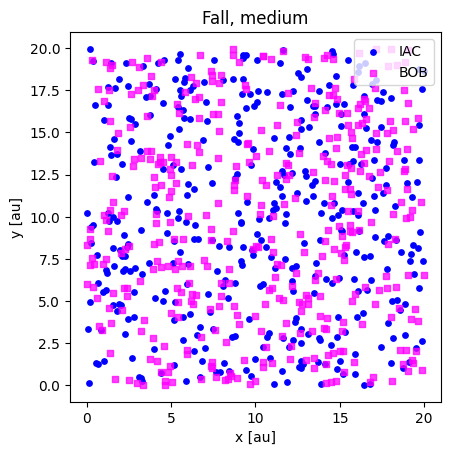
print(fall_cold_iac.shape, fall_cold_bob.shape)
plotloc_2c(fall_cold_iac, fall_cold_bob, title="Fall, cold")
(400, 2) (400, 2)
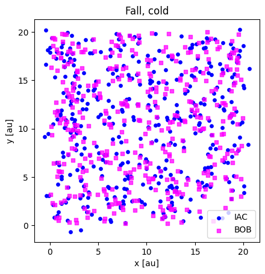
print(fall_warm_iac.shape, fall_warm_bob.shape)
plotloc_2c(fall_warm_iac, fall_warm_bob, title="Fall, warm")
(400, 2) (400, 2)
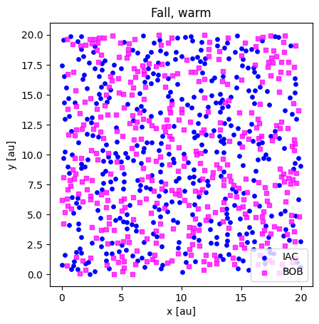
print(winter_cold_iac.shape, winter_cold_bob.shape)
plotloc_2c(winter_cold_iac, winter_cold_bob, title="Winter, cold")
(400, 2) (400, 2)
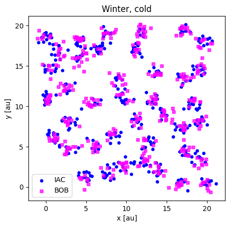
print(winter_medium_iac.shape, winter_medium_bob.shape)
plotloc_2c(winter_medium_iac, winter_medium_bob, title="Winter, medium")
(400, 2) (200, 2)
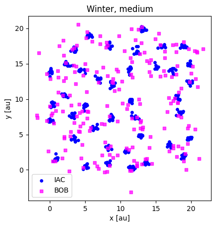
print(winter_warm_iac.shape, winter_warm_bob.shape)
plotloc_2c(winter_warm_iac, winter_warm_bob, title="Winter, warm")
(400, 2) (400, 2)
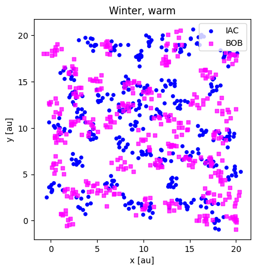
def meanNN(points1: np.ndarray, points2: np.ndarray) -> tuple[np.ndarray, float]:
"""
Computes the mean nearest neighbor distances for a set of 2D points.
Parameters:
- points1: array of shape (n_points, 2) representing the coordinates of the first set of points
- points2: array of shape (n_points, 2) representing the coordinates of the second set of points; if None, uses points1
Returns:
- min_dists: array of minimum distances of each point in points1 to its nearest neighbor in points2
- mean_nn: mean of the minimum distances
"""
d12 = distance_matrix(points1, points2)
if points1 is points2 or np.shares_memory(points1, points2):
np.fill_diagonal(d12, np.inf)
min_dists = np.min(d12, axis=1)
mean_nn = np.mean(min_dists)
return min_dists, mean_nn
nndist_fall_med, meannn_fall_med = meanNN(fall_med_iac, fall_med_bob)
nndist_fall_cold, meannn_fall_cold = meanNN(fall_cold_iac, fall_cold_bob)
nndist_fall_warm, meannn_fall_warm = meanNN(fall_warm_iac, fall_warm_bob)
# nndist_fall_med, meannn_fall_med = meanNN(fall_med_bob, fall_med_iac, )
# nndist_fall_cold, meannn_fall_cold = meanNN(fall_cold_bob, fall_cold_iac)
# nndist_fall_warm, meannn_fall_warm = meanNN(fall_warm_bob, fall_warm_iac)
plt.hist(nndist_fall_med, label="Fall medium", alpha=0.5, bins=25)
plt.hist(nndist_fall_cold, label="Fall cold", alpha=0.5, bins=25)
plt.hist(nndist_fall_warm, label="Fall warm", alpha=0.5, bins=25)
plt.xlabel("distance to nearest neighbor [a.u.]")
plt.axvline(
meannn_fall_med,
c="k",
linestyle="--",
label=f"Fall medium: {meannn_fall_med.round(2)}",
)
plt.axvline(
meannn_fall_cold,
c="k",
linestyle=":",
label=f"Fall cold: {meannn_fall_cold.round(2)}",
)
plt.axvline(
meannn_fall_warm,
c="k",
linestyle="-",
label=f"Fall warm: {meannn_fall_warm.round(2)}",
)
plt.legend()
<matplotlib.legend.Legend at 0x7f79eab65520>
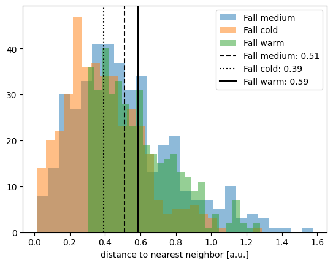
nndist_winter_warm, meannn_winter_warm = meanNN(winter_warm_iac, winter_warm_bob)
nndist_winter_medium, meannn_winter_medium = meanNN(
winter_medium_iac, winter_medium_bob
)
nndist_winter_cold, meannn_winter_cold = meanNN(winter_cold_iac, winter_cold_bob)
plt.hist(nndist_winter_cold, label="Winter cold", alpha=0.5, bins=25)
plt.hist(nndist_winter_medium, label="Winter medium", alpha=0.5, bins=25)
plt.hist(nndist_winter_warm, label="Winter warm", alpha=0.5, bins=25)
plt.xlabel("distance to nearest neighbor [a.u.]")
plt.title(" IAC -> BOB ")
plt.axvline(
meannn_winter_cold,
c="k",
linestyle=":",
label=f"Winter cold: {meannn_winter_cold.round(2)}",
)
plt.axvline(
meannn_winter_medium,
c="k",
linestyle="--",
label=f"Winter medium: {meannn_winter_medium.round(2)}",
)
plt.axvline(
meannn_winter_warm,
c="k",
linestyle="-",
label=f"Winter warm: {meannn_winter_warm.round(2)}",
)
plt.legend()
<matplotlib.legend.Legend at 0x7f79ea83f590>
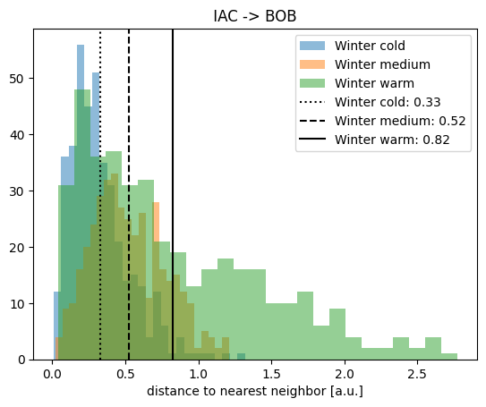
nndist_winter_warm_2, meannn_winter_warm_2 = ..., ...
nndist_winter_medium_2, meannn_winter_medium_2 = ..., ...
nndist_winter_cold_2, meannn_winter_cold_2 = ..., ...
nndist_winter_warm_2, meannn_winter_warm_2 = meanNN(winter_warm_bob, winter_warm_iac)
nndist_winter_medium_2, meannn_winter_medium_2 = meanNN(
winter_medium_bob, winter_medium_iac
)
nndist_winter_cold_2, meannn_winter_cold_2 = meanNN(winter_cold_bob, winter_cold_iac)
plt.hist(nndist_winter_cold_2, label="Winter cold", alpha=0.5, bins=25)
plt.hist(nndist_winter_medium_2, label="Winter medium", alpha=0.5, bins=25)
plt.hist(nndist_winter_warm_2, label="Winter warm", alpha=0.5, bins=25)
plt.title("BOB -> IAC")
plt.xlabel("distance to nearest neighbor [a.u.]")
plt.axvline(
meannn_winter_cold_2,
c="k",
linestyle=":",
label=f"Winter cold: {meannn_winter_cold_2.round(2)}",
)
plt.axvline(
meannn_winter_medium_2,
c="k",
linestyle="--",
label=f"Winter medium: {meannn_winter_medium_2.round(2)}",
)
plt.axvline(
meannn_winter_warm_2,
c="k",
linestyle="-",
label=f"Winter warm: {meannn_winter_warm_2.round(2)}",
)
plt.legend()
<matplotlib.legend.Legend at 0x7f79e5740c20>
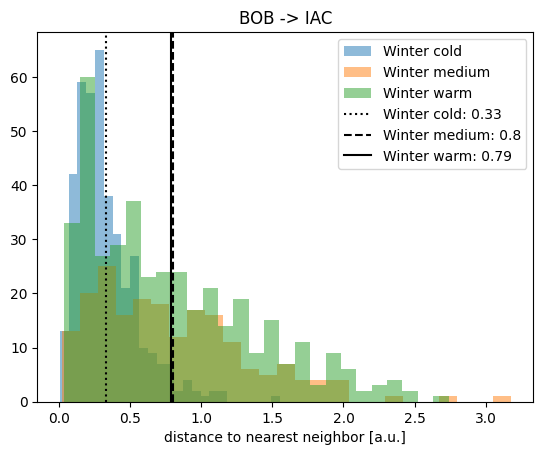
def nearest_neighbor_function(
points1: np.ndarray, points2: np.ndarray, radii: np.ndarray
) -> np.ndarray:
"""
Computes the nearest neighbor function for a set of 2D points.
Parameters:
- points1: array of shape (n_points, 2) representing the coordinates of the first set of points
- points2: array of shape (n_points, 2) representing the coordinates of the second set of points
- radii: array-like of radii at which to evaluate the nearest neighbor function
Returns:
- S: array of nearest neighbor function values at each radius
- mu0: array of expected values under the null model at each radius
"""
# calculate area based on bounding box of all points
allpoints = np.vstack((points1, points2))
max_x, max_y = np.max(allpoints, axis=0)
min_x, min_y = np.min(allpoints, axis=0)
(max_x - min_x) * (max_y - min_y)
n1 = len(points1) # number of points in the first set
d12 = distance_matrix(points1, points2)
if points1 is points2 or np.shares_memory(points1, points2):
np.fill_diagonal(
d12, np.inf
) # Set diagonal to infinity to ignore self-distances
min_dists = np.min(d12, axis=1) # nearest neighbor distances per point
S = np.empty(radii.shape, dtype=float)
for i, r in enumerate(radii):
within_r = min_dists < r
n_within_r = len(min_dists[within_r])
S[i] = n_within_r / n1
return S
radii = np.arange(0, 3, 0.25)
s_fall_med = nearest_neighbor_function(fall_med_iac, fall_med_bob, radii)
s_fall_warm = nearest_neighbor_function(fall_warm_iac, fall_warm_bob, radii)
s_fall_cold = nearest_neighbor_function(fall_cold_iac, fall_cold_bob, radii)
plot_nn_function(s_fall_cold, radii, show=False, label="Fall cold", line=":")
plot_nn_function(s_fall_med, radii, show=False, label="Fall medium", line="--")
plot_nn_function(s_fall_warm, radii, show=False, label="Fall warm", line="-")
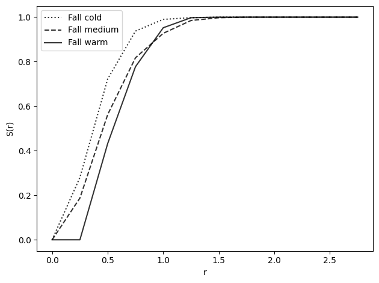
s_winter_warm = nearest_neighbor_function(winter_warm_iac, winter_warm_bob, radii)
s_winter_medium = nearest_neighbor_function(winter_medium_iac, winter_medium_bob, radii)
s_winter_cold = nearest_neighbor_function(winter_cold_iac, winter_cold_bob, radii)
s_winter_warm_2 = nearest_neighbor_function(winter_warm_bob, winter_warm_iac, radii)
s_winter_medium_2 = nearest_neighbor_function(
winter_medium_bob, winter_medium_iac, radii
)
s_winter_cold_2 = nearest_neighbor_function(winter_cold_bob, winter_cold_iac, radii)
plot_nn_function(
s_winter_cold, radii, show=False, label="Winter cold IAC -> BOB", line=":"
)
plot_nn_function(
s_winter_medium, radii, show=False, label="Winter medium IAC -> BOB", line="--"
)
plot_nn_function(
s_winter_warm, radii, show=False, label="Winter warm IAC -> BOB", line="-"
)
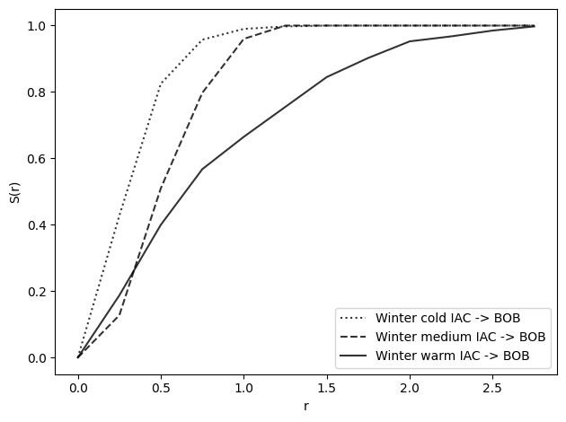
plot_nn_function(
s_winter_cold_2, radii, show=False, label="Winter cold BOB -> IAC", line=":"
)
plot_nn_function(
s_winter_medium_2, radii, show=False, label="Winter medium BOB -> IAC", line="--"
)
plot_nn_function(
s_winter_warm_2, radii, show=False, label="Winter warm BOB -> IAC", line="-"
)
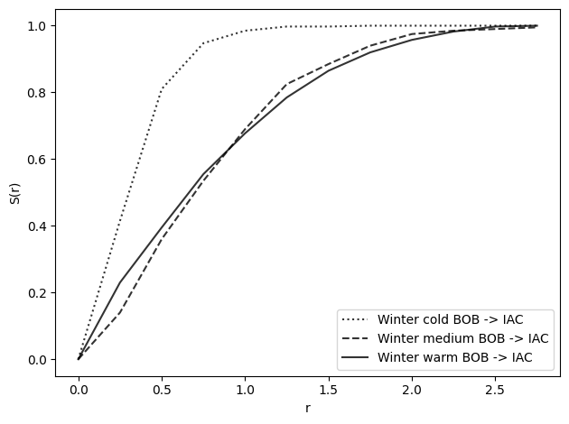
def ripleys_k_function(
points1: np.ndarray,
points2: np.ndarray,
radii: np.ndarray,
area=None,
edge_correction=False,
) -> np.ndarray:
"""
Computes Ripley's K function for a set of 2D points.
Parameters:
- points1: array of shape (n_points, 2) representing the coordinates of the first set of points
- points2: array of shape (n_points, 2) representing the coordinates of the second set of points
- radii: array-like of radii at which to evaluate K
- area: total area of the observation window; if None, calculated from bounding box
- edge_correction: if True, applies basic border edge correction
Returns:
- ks: K-function values at each radius
"""
#### Get the number of points
n1 = len(points1)
n2 = len(points2)
ks = np.zeros_like(radii, dtype=float)
dists = distance_matrix(points1, points2)
#### Compute area if not provided
allpoints = np.vstack((points1, points2))
max_x, max_y = np.max(allpoints, axis=0)
if area is None:
min_x, min_y = np.min(allpoints, axis=0)
area = (max_x - min_x) * (max_y - min_y)
else:
min_x = 0
min_y = 0
max_x = np.max([max_x, np.sqrt(area)])
max_y = np.max([max_y, np.sqrt(area)])
if edge_correction:
# Determine FOV area
square = box(min_x, min_y, max_x, max_y)
area_correction = np.zeros_like(dists)
for i in range(n1):
for j in range(n2):
circle = Point(points1[i]).buffer(dists[i][j])
if circle.area == 0 or circle.intersection(square).area == 0:
continue # Avoid division by zero
area_correction[i][j] = circle.area / circle.intersection(square).area
if points1 is points2 or np.shares_memory(points1, points2):
np.fill_diagonal(dists, np.inf)
for i, r in enumerate(radii):
within_r = dists < r
if edge_correction:
within_r = within_r * area_correction
count_within_r = np.sum(within_r)
ks[i] = (area / (n1 * n2)) * count_within_r
return ks
k_radii = np.arange(0, 5.01, 0.5) # radii for which to compute the K-function
k_fall_med = ripleys_k_function(fall_med_iac, fall_med_bob, radii=k_radii, area=400)
k_fall_cold = ripleys_k_function(fall_cold_iac, fall_cold_bob, radii=k_radii, area=400)
k_fall_warm = ripleys_k_function(fall_warm_iac, fall_warm_bob, radii=k_radii, area=400)
k_winter_warm = ripleys_k_function(
winter_warm_iac, winter_warm_bob, radii=k_radii, area=400
)
k_winter_medium = ripleys_k_function(
winter_medium_iac, winter_medium_bob, radii=k_radii, area=400
)
k_winter_cold = ripleys_k_function(
winter_cold_iac, winter_cold_bob, radii=k_radii, area=400
)
k_winter_medium_2 = ripleys_k_function(
winter_medium_bob, winter_medium_iac, radii=k_radii, area=400
)
print(k_winter_medium_2 == k_winter_medium)
[ True True True True True True True True True True True]
plot_ripleys_k(k_fall_cold, k_radii, label="Fall cold", show=False, line=":")
plot_ripleys_k(k_fall_med, k_radii, label="Fall medium", show=False, line="--")
plot_ripleys_k(k_fall_warm, k_radii, label="Fall warm", show=False, line="-")
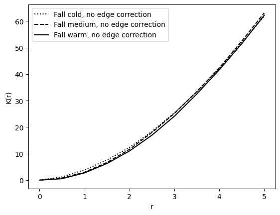
plot_ripleys_k(k_winter_cold, k_radii, label="Winter cold", line=":", show=False)
plot_ripleys_k(k_winter_medium, k_radii, label="Winter medium", line="--", show=False)
plot_ripleys_k(k_winter_warm, k_radii, label="Winter warm", show=False)
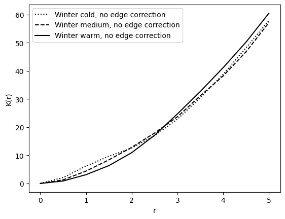
k_fall_med_ec = ripleys_k_function(
fall_med_iac, fall_med_bob, radii=k_radii, area=400, edge_correction=True
)
k_fall_warm_ec = ripleys_k_function(
fall_warm_iac, fall_warm_bob, radii=k_radii, area=400, edge_correction=True
)
k_fall_cold_ec = ripleys_k_function(
fall_cold_iac, fall_cold_bob, radii=k_radii, area=400, edge_correction=True
)
k_winter_warm_ec = ripleys_k_function(
winter_warm_iac, winter_warm_bob, radii=k_radii, area=400, edge_correction=True
)
k_winter_medium_ec = ripleys_k_function(
winter_medium_iac, winter_medium_bob, radii=k_radii, area=400, edge_correction=True
)
k_winter_cold_ec = ripleys_k_function(
winter_cold_iac, winter_cold_bob, radii=k_radii, area=400, edge_correction=True
)
plot_ripleys_k_ec(k_fall_warm, k_fall_warm_ec, k_radii, label="Fall warm")
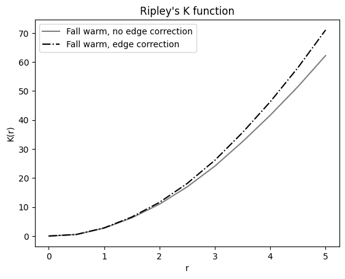
plot_ripleys_k_ec(k_winter_cold, k_winter_cold_ec, k_radii, label="Winter cold")
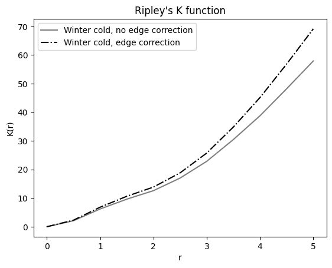
def getnulldist(n: int, radii: np.ndarray, area: float) -> np.ndarray:
"""
Computes the expected nearest neighbor distances under a null model for a set of 2D points.
Parameters:
- points2: array of shape (n_points, 2) representing the coordinates of the points to compute nearest n
neighbor distances to
- radii: array-like of radii at which to evaluate the null model
Returns:
- mu0: array of expected nearest neighbor distances at each radius
"""
mu0 = np.empty(radii.shape, dtype=float)
for i, r in enumerate(radii):
mu0[i] = 1 - np.exp(-(n / area) * np.pi * (r**2))
return mu0
n = 1345345 # number of points in the dataset
area = 4056780 # area of the FOV
nulldist = getnulldist(
n=n, area=area, radii=radii
) # These are not good values for n and area. Change them!
plot_nn_function(s_fall_cold, radii, show=False, label="Fall cold", line=":")
plot_nn_function(s_fall_med, radii, show=False, label="Fall medium", line="--")
plot_nn_function(
s_fall_warm, radii, show=False, label="Fall warm", line="-", nulldist=nulldist
)
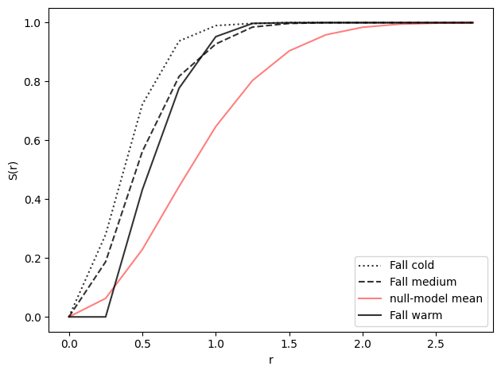
plot_nn_function(s_winter_cold, radii, show=False, label="Winter cold", line=":")
plot_nn_function(s_winter_medium, radii, show=False, label="Winter medium", line="--")
plot_nn_function(
s_winter_warm, radii, show=True, label="Winter warm", nulldist=nulldist
)
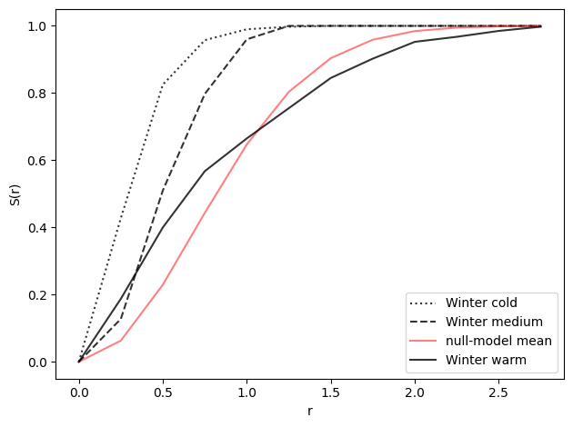
seed = 5
rng = np.random.default_rng(seed)
board_x = 20
board_y = 20
n_darts = 500
x = rng.uniform(0, board_x, size=n_darts)
y = rng.uniform(0, board_y, size=n_darts)
plt.scatter(x, y)
plt.xlabel("x [au]")
plt.ylabel("y [au]")
plt.title("Darts on a board")
plt.gca().set_aspect("equal")
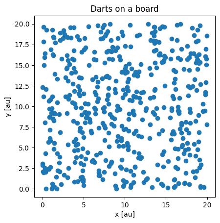
def sample_uniform_points_batch(
ndraw: int, num_points: int = 400, x_max: int = 10, y_max: int = 10, seed: int = 42
) -> np.ndarray:
"""
Generate *ndraw* independent batches of 2-D points drawn from independent
**uniform random** distributions on the rectangle ``[0, x_max] × [0, y_max]``.
Unlike a “uniform grid,” the points are *randomly* scattered—each position
inside the rectangle has equal probability of being chosen.
Parameters
----------
ndraw : int
Number of batches to generate.
num_points : int
Number of points in each batch.
x_max : int
Maximum x-coordinate value.
y_max : int
Maximum y-coordinate value.
seed : int
Random seed for reproducibility.
Returns
-------
np.ndarray
Array of shape (ndraw, num_points, 2) containing the generated points.
"""
rng = np.random.default_rng(seed)
x = rng.uniform(0, x_max, size=(ndraw, num_points, 1))
y = rng.uniform(0, y_max, size=(ndraw, num_points, 1))
return np.concatenate([x, y], axis=-1)
ndraw = 1000 # Sufficiently large for statistics.
num_points_c1 = len(fall_med_iac) # Same number of points as c1
num_points_c2 = len(fall_med_bob) # Same number of points as c2
# Generate random points for multiple samples, channel 1
points_multiple_c1 = sample_uniform_points_batch(
ndraw, num_points=num_points_c1, x_max=20, y_max=20, seed=42
)
# channel 2
points_multiple_c2 = sample_uniform_points_batch(
ndraw, num_points=num_points_c2, x_max=20, y_max=20, seed=43
)
def plotpoints(points: np.ndarray, title: str = "Monte carlo simulated points") -> None:
"""Plots a set of 2D points.
Parameters:
- points: array of shape (n_points, 2) representing the coordinates of the points
- title: title of the plot
"""
plt.scatter(points[:, 0], points[:, 1], c="k", s=10)
plt.title(label=title)
plt.xlabel("x [au]")
plt.ylabel("y [au]")
ax = plt.gca()
ax.set_aspect("equal", adjustable="box")
sample_i = 999
print(points_multiple_c1[sample_i].shape)
print(points_multiple_c2[sample_i].shape)
plotpoints(points_multiple_c1[sample_i])
plt.show()
plotpoints(points_multiple_c2[sample_i])
plt.show()
(400, 2)
(400, 2)
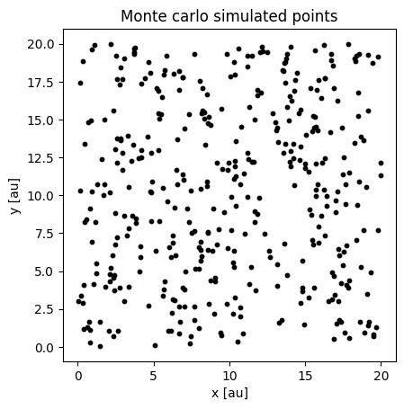
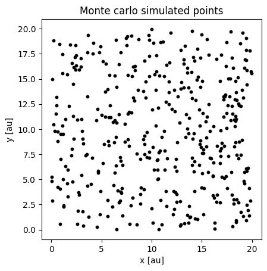
nn_multiple = np.zeros(ndraw, dtype=float)
for i in range(ndraw): # for all randomly generated samples
_, mean_i = meanNN(
points_multiple_c1[i], points_multiple_c2[i]
) # calculate their mean
nn_multiple[i] = mean_i
alpha = 5 # significance level. Only 5% of simulations under the null hypothesis will lie outside a 95% significance level
bound_low = alpha / 2
bound_upper = 100 - bound_low
# Compute percentiles for mean nearest neighbor distance of the simulated points
percentile_low = np.percentile(
nn_multiple, bound_low
) # Only alpha/2 % of simulations lie below this value
percentile_high = np.percentile(
nn_multiple, bound_upper
) # Only alpha/2 % of simulations lie above this value
plt.hist(nndist_fall_med, label="Fall medium", alpha=0.5, bins=25)
plt.hist(nndist_fall_cold, label="Fall cold", alpha=0.5, bins=25)
plt.hist(nndist_fall_warm, label="Fall warm", alpha=0.5, bins=25)
plt.xlabel("distance to nearest neighbor [a.u.]")
plt.axvline(meannn_fall_med, c="k", linestyle="--", label="Fall medium")
plt.axvline(meannn_fall_cold, c="k", linestyle=":", label="Fall cold")
plt.axvline(meannn_fall_warm, c="k", linestyle="-", label="Fall warm")
# Now we display the confidence bounds
plt.axvspan(
percentile_low,
percentile_high,
color="gray",
alpha=0.5,
label=f"confidence band {bound_low}-{bound_upper}%",
)
plt.legend()
<matplotlib.legend.Legend at 0x7f79e54d9d90>
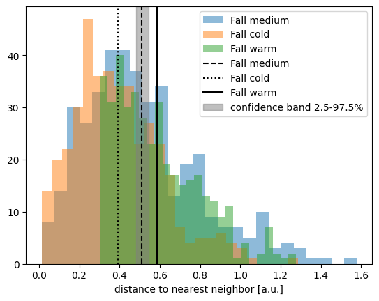
plt.hist(nndist_winter_cold, label="Winter cold", alpha=0.5, bins=25)
plt.hist(nndist_winter_warm, label="Winter warm", alpha=0.5, bins=25)
plt.xlabel("distance to nearest neighbor [a.u.]")
plt.axvline(meannn_winter_cold, c="k", linestyle=":", label="Winter cold")
plt.axvline(meannn_winter_warm, c="k", linestyle="-", label="Winter warm")
plt.axvspan(
percentile_low,
percentile_high,
color="gray",
alpha=0.5,
label=f"confidence band {bound_low}-{bound_upper}%",
)
plt.legend()
<matplotlib.legend.Legend at 0x7f79e56f3890>
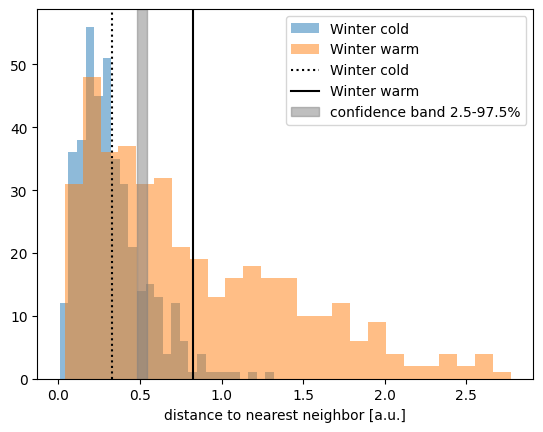
s_multiple = np.zeros([ndraw, len(radii)], dtype=float)
for i in range(ndraw): # for all randomly generated samples
s_multiple[i] = nearest_neighbor_function(
points_multiple_c1[i], points_multiple_c2[i], radii
)
plot_envelope(
s_fall_cold,
s_multiple,
radii=radii,
metric="S(r)",
label="Fall cold",
linestyle=":",
show=False,
)
plot_envelope(
s_fall_med,
s_multiple,
radii=radii,
metric="S(r)",
label="Fall medium",
linestyle="--",
show=False,
)
plot_envelope(
s_fall_warm,
s_multiple,
radii=radii,
metric="S(r)",
linestyle="-",
label="Fall warm",
show=True,
)
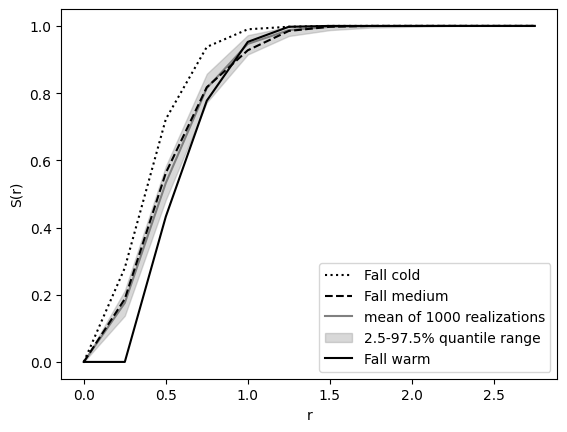
plot_envelope(
s_winter_cold,
s_multiple,
radii=radii,
metric="S(r)",
label="Winter cold",
linestyle=":",
show=False,
)
plot_envelope(
s_winter_warm,
s_multiple,
radii=radii,
metric="S(r)",
label="Winter warm",
show=False,
)
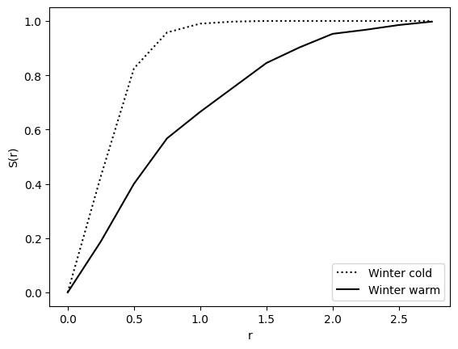
ks_multiple = np.zeros([ndraw, len(k_radii)], dtype=float)
for i in range(ndraw):
ks_multiple[i] = ripleys_k_function(
points_multiple_c1[i],
points_multiple_c2[i],
radii=k_radii,
area=400,
edge_correction=False,
)
plot_envelope(
k_fall_cold,
ks_multiple,
radii=k_radii,
metric="K(r)",
label="Fall cold",
show=False,
linestyle=":",
)
plot_envelope(
k_fall_med,
ks_multiple,
radii=k_radii,
metric="K(r)",
label="Fall medium",
linestyle="--",
show=False,
)
plot_envelope(
k_fall_warm, ks_multiple, radii=k_radii, metric="K(r)", label="Fall warm", show=True
)
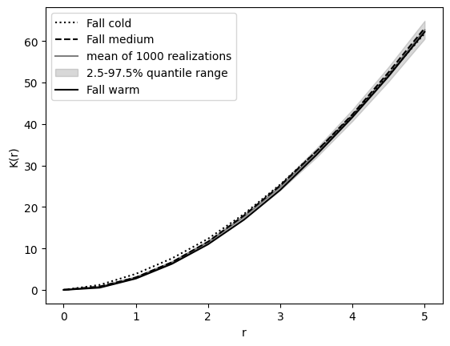
plot_envelope(
k_winter_cold,
ks_multiple,
radii=k_radii,
metric="K(r)",
label="Winter cold",
linestyle=":",
show=False,
)
plot_envelope(
k_winter_warm,
ks_multiple,
radii=k_radii,
metric="K(r)",
label="Winter warm",
show=False,
)
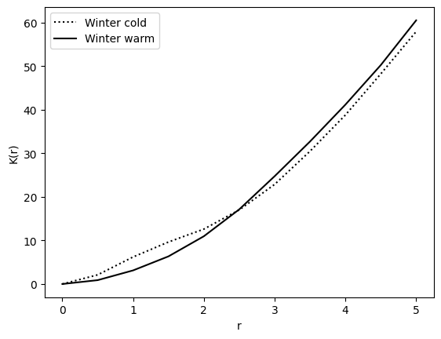